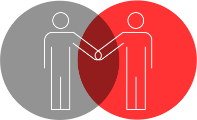
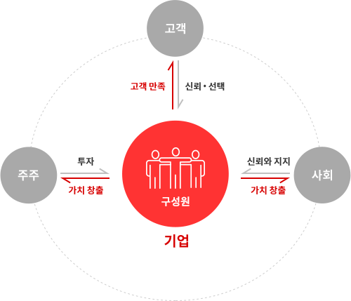
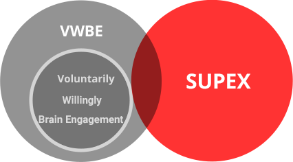
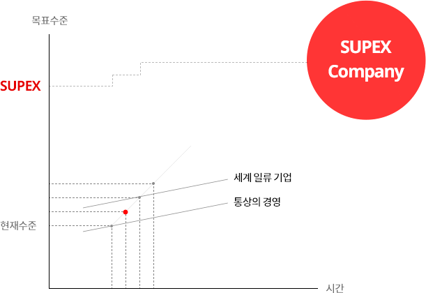

우리는 내일을 위한 가치를 만들어 갑니다
회사소개
기업문화
SK를 만들어가는 SK의 기업문화 SKMS
SK가 지금까지 지속적인 성장과 발전을 거듭해 온 데에는
SKMS를 토대로 한 경영활동과 기업문화의 정착이 매우 큰역할을 했습니다.
SK그룹과 구성원
SK그룹을 구성하는 각 기업은 이사회를 중심으로 자율 ·책임 경영을 실천해
나가며, 상호 협력을 구체적으로 실현하기 위해 공동 협약에 따른 협의회를
운영하고 자율적으로 참여합니다. 이것이 SK 고유의 그룹 운영 방식인
‘따로 또 같이’ 경영입니다.
SK그룹의 모든 구성원은 SK 경영철학에 대한 확신과 열정을 가지고,
자발적·의욕적으로 이를 실천합니다.

SKMS의 실천과 진화·발전
SKMS는 경영의 기본 방향을 제시하고 있으며,
SK의 경영철학과 이를 현실 경영에 구현하는 방법론으로 구성되어 있습니다.
SK의 모든 경영자는 SKMS 실천과 진화·발전에 앞장서야 하며, 특히 기업가적 대주주는 SK그룹과 경영철학을 유지하고 발전시키는 책임을 다하여야 합니다.
SK의 모든 구성원은 자발적∙의욕적 두뇌활동을 통한 SUPEX 추구문화로
이해관계자 행복을 구현할 수 있다고 믿습니다.
이해 관계자의 행복
기업은 이해관계자 간 행복이 조화와 균형을 이루도록 노력하고,
장기적으로 지속 가능하도록 현재와 미래의 행복을 동시에
고려해야 합니다. 구성원은 기업의 이해관계자 중 하나임과 동시에
기업을 구성하는 주체입니다.
이해관계자에 대한 행복을 추구함으로써 구성원 전체의 행복이
커지고, 이를 통해 구성원 각자의 행복도 지속될 수 있다는 것을
믿고 실천합니다.

VWBE를 통한 SUPEX 추구 문화
급변하는 환경 속에서 기업은 이해관계자 행복을 키워나가기 위하여
SUPEX* 추구를 통하여 최고의 성과를 지속적으로 창출하여야 합니다.
이를 위해 구성원은 자발적(Voluntarily)이고 의욕적(Willingly)인
두뇌활용(Brain Engagement)을 통해 최대한의 역량을 발휘하여 성과
창출에 기여합니다.
* Super Excellent Level의 줄인 말로 인간의 능력으로 도달할 수 있는 최고의 수준

SUPEX 목표와 실행전략을 수립하고 이를 실행할 수 있는 환경을
조성하여 경영철학을 실천합니다.
SUPEX 목표/실행전략
이해관계자의 행복을 지속적으로 키워나가기 위해 SK는 인간의 능력으로 도달할 수 있는 최고의 수준인 SUPEX, 즉 Super Excellent
수준을 목표로 정하고 이를 달성하기 위해 노력하고 있습니다.
SUPEX Company를 지향하되 곧바로 도달하는 것은 현실적으로 어려우므로 한 단계 높은 수준의 회사(Better Company)를 목표로 설정하고, 이를 반복적으로
달성하면서 SUPEX Company를 구현해 나갑니다.
VWBE를 통한 SUPEX 추구 문화
SUPEX 추구를 위해서는 구성원이
자발적이고 의욕적인 두뇌활용을 하여야 합니다.
자발적·의욕적 두뇌활용이 외부로 발현되는 모습이
곧 일과 싸워서 이기는 패기입니다.
따라서, SUPEX 추구 환경을 조성할 때는
구성원이 패기를 갖추도록 하는 것 이 중요합니다.
